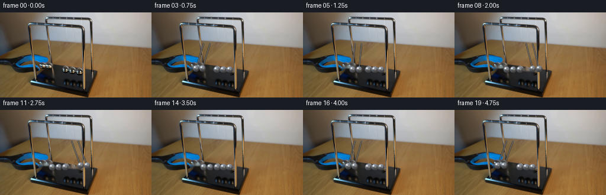
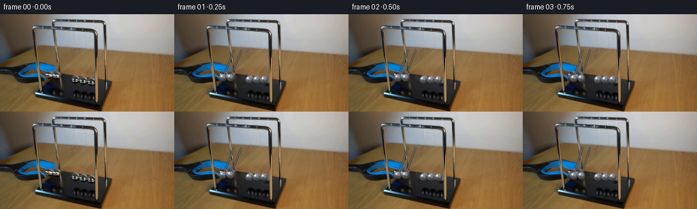
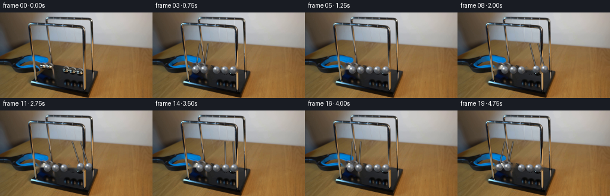
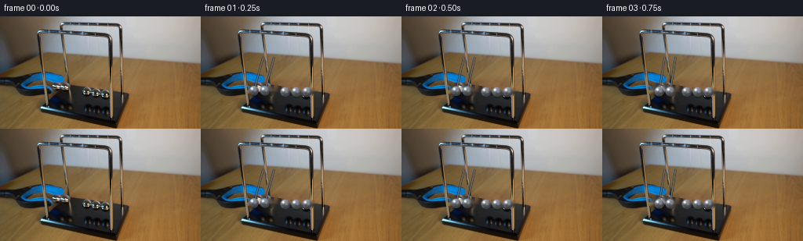

CODING AGENTS AS PIXEL WORLD MODELS
traex/DeepSeek-V4.1-Flash · 0054
点击播放 · 原生 RGB 像素
逐轮保存的候选
回放视频、检查图与代码变化。
每份候选均可单独播放。实际图片检查记录在下方工具轨迹中。
候选 01播放与检查图
点击播放 · 原生 RGB 像素


展开代码变化
--- 上一保存版本
+++ 本次保存版本
@@ -0,0 +1,182 @@
+from pathlib import Path
+
+import cv2
+import numpy as np
+from PIL import Image
+
+import artifact_io
+
+
+ROOT = Path(__file__).resolve().parent
+W, H = 256, 144
+N = 20
+
+# The five balls form one slightly receding row. The left pair starts lifted
+# into the gripper; the right pair leaves after the collision.
+REST_X = np.array([88.0, 99.0, 110.0, 121.0, 132.0], dtype=np.float64)
+REST_Y = np.array([96.8, 97.4, 98.0, 98.6, 99.2], dtype=np.float64)
+BALL_R = 5.35
+PIVOT_Y = 52.8
+PENDULUM_L = 44.2
+
+LEFT_ANGLE = np.array(
+ [-22, -22, -20.5, -17, -11.5, -5.5, 0, 0, 0, 0, 0, 0, 0, 0, 0, -8, -15.5, -20.5, -22, -20],
+ dtype=np.float64,
+)
+RIGHT_ANGLE = np.array(
+ [0, 0, 0, 0, 0, 0, 0, 7.5, 14.5, 20, 22, 20, 14.5, 7.5, 0, 0, 0, 0, 0, 0],
+ dtype=np.float64,
+)
+
+
+def _positions_for_frame(frame_index):
+ left = np.deg2rad(LEFT_ANGLE[frame_index])
+ right = np.deg2rad(RIGHT_ANGLE[frame_index])
+ angles = np.zeros(5, dtype=np.float64)
+ angles[0:2] = left
+ angles[3:5] = right
+
+ centers = np.empty((5, 2), dtype=np.float64)
+ centers[:, 0] = REST_X + PENDULUM_L * np.sin(angles)
+ centers[:, 1] = PIVOT_Y + PENDULUM_L * np.cos(angles)
+
+ # A subpixel compression wave travels through the middle during contact.
+ if frame_index in (6, 14):
+ centers[2, 0] += 0.65
+ centers[1, 0] -= 0.20
+ centers[3, 0] += 0.20
+ elif frame_index in (7, 15):
+ centers[2, 0] -= 0.15
+
+ return centers, angles
+
+
+def _clean_plate(rgb):
+ mask = np.zeros((H, W), dtype=np.uint8)
+ for x, y in zip(REST_X, REST_Y):
+ cv2.circle(mask, (int(round(x)), int(round(y))), 7, 255, -1)
+
+ # Original lifted pair. Their small circular holes are filled with the
+ # neighboring blue/black gripper and dark cradle material.
+ for x, y in ((71.6, 94.1), (82.6, 94.3)):
+ cv2.circle(mask, (int(round(x)), int(round(y))), 7, 255, -1)
+
+ return cv2.inpaint(rgb, mask, 3, cv2.INPAINT_TELEA)
+
+
+def _composite_alpha(dst, color, alpha):
+ a = alpha[..., None]
+ dst[...] = dst * (1.0 - a) + color * a
+
+
+def _draw_string(img, pivot, ball, alpha=0.42):
+ x0, y0 = pivot
+ x1, y1 = ball
+ length = max(abs(x1 - x0), abs(y1 - y0), 1.0)
+ steps = int(np.ceil(length * 2.0))
+ ts = np.linspace(0.0, 1.0, steps + 1)
+ xs = x0 + (x1 - x0) * ts
+ ys = y0 + (y1 - y0) * ts
+
+ for radius, strength, tone in ((1.35, alpha * 0.55, 30.0), (0.55, alpha, 142.0)):
+ for x, y in zip(xs, ys):
+ x0i = max(0, int(np.floor(x - radius - 1)))
+ x1i = min(W, int(np.ceil(x + radius + 2)))
+ y0i = max(0, int(np.floor(y - radius - 1)))
+ y1i = min(H, int(np.ceil(y + radius + 2)))
+ yy, xx = np.mgrid[y0i:y1i, x0i:x1i]
+ d = np.hypot(xx + 0.5 - x, yy + 0.5 - y)
+ a = np.clip(radius + 0.55 - d, 0.0, 1.0) * strength
+ if not np.any(a):
+ continue
+ patch = img[y0i:y1i, x0i:x1i]
+ target = np.full_like(patch, tone)
+ patch[...] = patch * (1.0 - a[..., None]) + target * a[..., None]
+
+
+def _render_ball(img, cx, cy, radius=BALL_R):
+ scale = 4
+ pad = 2.0
+ x0 = int(np.floor(cx - radius - pad))
+ x1 = int(np.ceil(cx + radius + pad))
+ y0 = int(np.floor(cy - radius - pad))
+ y1 = int(np.ceil(cy + radius + pad))
+ x0c, x1c = max(0, x0), min(W, x1)
+ y0c, y1c = max(0, y0), min(H, y1)
+ if x1c <= x0c or y1c <= y0c:
+ return
+
+ xs = (np.arange(x0c * scale, x1c * scale) + 0.5) / scale
+ ys = (np.arange(y0c * scale, y1c * scale) + 0.5) / scale
+ xx, yy = np.meshgrid(xs, ys)
+ dx = (xx - cx) / radius
+ dy = (yy - cy) / radius
+ rr = dx * dx + dy * dy
+ inside = rr <= 1.0
+ nz = np.sqrt(np.clip(1.0 - rr, 0.0, 1.0))
+
+ diffuse = np.clip(-0.42 * dx - 0.58 * dy + 0.72 * nz, 0.0, 1.0)
+ upper = np.clip(-dy, 0.0, 1.0)
+ right = np.clip(dx, 0.0, 1.0)
+ lower = np.clip(dy, 0.0, 1.0)
+ rim = np.clip((1.0 - nz) * 2.4, 0.0, 1.0)
+
+ color = np.empty((*dx.shape, 3), dtype=np.float64)
+ color[..., 0] = 45.0 + 68.0 * diffuse + 22.0 * upper + 9.0 * right + 10.0 * rim
+ color[..., 1] = 46.0 + 70.0 * diffuse + 23.0 * upper + 7.0 * right + 12.0 * rim
+ color[..., 2] = 48.0 + 72.0 * diffuse + 27.0 * upper + 8.0 * right + 15.0 * rim
+
+ # Cool upper reflection, warm table reflection, and a dark equatorial band.
+ color += np.array([12.0, 18.0, 24.0]) * upper[..., None]
+ color += np.array([32.0, 18.0, 5.0]) * (lower * right)[..., None]
+ band = np.exp(-((dy - 0.24) / 0.14) ** 2) * np.clip(1.0 - abs(dx) * 0.55, 0.0, 1.0)
+ color -= band[..., None] * np.array([18.0, 17.0, 15.0])
+
+ s1 = np.exp(-(((dx + 0.36) ** 2 + (dy + 0.42) ** 2) / (2.0 * 0.16 ** 2)))
+ s2 = np.exp(-(((dx - 0.31) ** 2 + (dy + 0.02) ** 2) / (2.0 * 0.24 ** 2)))
+ color += s1[..., None] * np.array([188.0, 186.0, 178.0])
+ color += s2[..., None] * np.array([48.0, 45.0, 36.0])
+ color = np.clip(color, 0.0, 255.0)
+
+ # A small contact shadow gives the tiny spheres weight.
+ shadow = np.exp(-(((xx - cx + radius * 0.25) / (radius * 1.05)) ** 2 +
+ ((yy - cy - radius * 0.72) / (radius * 0.38)) ** 2))
+ shadow = shadow * 0.16
+ sy0, sy1 = y0c, y1c
+ sx0, sx1 = x0c, x1c
+ syy, sxx = np.mgrid[sy0:sy1, sx0:sx1]
+ # Reuse the high-resolution shadow for anti-aliased downsampling.
+ sh = np.exp(-(((sxx + 0.5 - cx + radius * 0.25) / (radius * 1.05)) ** 2 +
+ ((syy + 0.5 - cy - radius * 0.72) / (radius * 0.38)) ** 2)) * 0.12
+ img[sy0:sy1, sx0:sx1] *= (1.0 - sh[..., None])
+
+ color4 = color.reshape(y1c - y0c, scale, x1c - x0c, scale, 3).mean((1, 3))
+ inside4 = inside.reshape(y1c - y0c, scale, x1c - x0c, scale).mean((1, 3))
+ _composite_alpha(img[y0c:y1c, x0c:x1c], color4, inside4)
+
+
+def generate():
+ source = np.asarray(Image.open(ROOT / "first_frame.png").convert("RGB"), dtype=np.uint8)
+ plate = _clean_plate(source.copy())
+ frames = np.empty((N, H, W, 3), dtype=np.uint8)
+ frames[0] = source
+
+ for index in range(1, N):
+ frame = plate.astype(np.float64).copy()
+ centers, angles = _positions_for_frame(index)
+
+ for i in range(5):
+ if abs(angles[i]) > 1e-5:
+ _draw_string(frame, (REST_X[i], PIVOT_Y), centers[i])
+
+ for cx, cy in centers:
+ _render_ball(frame, cx, cy)
+
+ frames[index] = np.clip(np.rint(frame), 0, 255).astype(np.uint8)
+
+ assert np.array_equal(frames[0], source)
+ return frames
+
+
+if __name__ == "__main__":
+ artifact_io.save(generate(), ROOT)
候选 02播放与检查图
点击播放 · 原生 RGB 像素


展开代码变化
--- 上一保存版本
+++ 本次保存版本
@@ -13,18 +13,18 @@
# The five balls form one slightly receding row. The left pair starts lifted
# into the gripper; the right pair leaves after the collision.
-REST_X = np.array([88.0, 99.0, 110.0, 121.0, 132.0], dtype=np.float64)
-REST_Y = np.array([96.8, 97.4, 98.0, 98.6, 99.2], dtype=np.float64)
-BALL_R = 5.35
+REST_X = np.array([79.5, 93.5, 107.5, 121.5, 135.5], dtype=np.float64)
+REST_Y = np.array([96.0, 96.1, 96.2, 96.3, 96.4], dtype=np.float64)
+BALL_R = 6.15
PIVOT_Y = 52.8
PENDULUM_L = 44.2
LEFT_ANGLE = np.array(
- [-22, -22, -20.5, -17, -11.5, -5.5, 0, 0, 0, 0, 0, 0, 0, 0, 0, -8, -15.5, -20.5, -22, -20],
+ [-16, -15.5, -13, -9, -4.5, 0, 0, 0, 0, 0, 0, 0, 0, 0, 0, 0, -4, -10, -15.5, -12.5],
dtype=np.float64,
)
RIGHT_ANGLE = np.array(
- [0, 0, 0, 0, 0, 0, 0, 7.5, 14.5, 20, 22, 20, 14.5, 7.5, 0, 0, 0, 0, 0, 0],
+ [0, 0, 0, 0, 0, 0, 1.5, 8, 14, 18, 20, 18, 14, 8, 2, 0, 0, 0, 0, 0],
dtype=np.float64,
)
@@ -40,13 +40,11 @@
centers[:, 0] = REST_X + PENDULUM_L * np.sin(angles)
centers[:, 1] = PIVOT_Y + PENDULUM_L * np.cos(angles)
- # A subpixel compression wave travels through the middle during contact.
- if frame_index in (6, 14):
- centers[2, 0] += 0.65
- centers[1, 0] -= 0.20
- centers[3, 0] += 0.20
- elif frame_index in (7, 15):
- centers[2, 0] -= 0.15
+ # A subpixel compression wave travels through the middle at impact.
+ if frame_index in (5, 15):
+ centers[2, 0] += 0.45
+ elif frame_index in (6, 16):
+ centers[2, 0] -= 0.10
return centers, angles
@@ -54,12 +52,15 @@
def _clean_plate(rgb):
mask = np.zeros((H, W), dtype=np.uint8)
for x, y in zip(REST_X, REST_Y):
- cv2.circle(mask, (int(round(x)), int(round(y))), 7, 255, -1)
+ cv2.circle(mask, (int(round(x)), int(round(y))), 8, 255, -1)
# Original lifted pair. Their small circular holes are filled with the
# neighboring blue/black gripper and dark cradle material.
- for x, y in ((71.6, 94.1), (82.6, 94.3)):
- cv2.circle(mask, (int(round(x)), int(round(y))), 7, 255, -1)
+ held = np.deg2rad(LEFT_ANGLE[0])
+ for x in REST_X[:2]:
+ hx = x + PENDULUM_L * np.sin(held)
+ hy = PIVOT_Y + PENDULUM_L * np.cos(held)
+ cv2.circle(mask, (int(round(hx)), int(round(hy))), 8, 255, -1)
return cv2.inpaint(rgb, mask, 3, cv2.INPAINT_TELEA)
可观测工具轨迹
实际执行的命令与返回图片。
命令 1exit 0
/bin/bash -c "pwd && rg --files -g '"'!*.pyc'"' -g '"'!__pycache__'"' | sed -n '1,200p'"
命令 2exit 0
/bin/bash -c "sed -n '1,240p' prompt.txt"
命令 3exit 0
/bin/bash -c "sed -n '1,260p' GENERATION_RULES.md"
命令 4exit 0
/bin/bash -c 'file first_frame.png && identify first_frame.png 2>/dev/null || true && git status --short'
命令 5exit 0
/bin/bash -c "sed -n '1,260p' artifact_io.py"
命令 6exit 0
/bin/bash -c "sed -n '1,300p' player_template.html"
命令 7exit 0
/bin/bash -c "python - <<'PY'
from PIL import Image
import numpy as np
im=Image.open('first_frame.png')
a=np.asarray(im)
print(im.mode, im.size, a.shape, a.dtype)
print('range', a.min(axis=(0,1)), a.max(axis=(0,1)))
print('mean', a.mean(axis=(0,1)))
print('corners', a[0,0], a[0,-1], a[-1,0], a[-1,-1])
PY"命令 8exit 0
/bin/bash -c "python - <<'PY'
from PIL import Image
import numpy as np
im=np.asarray(Image.open('first_frame.png')).astype(float)
g=(.299*im[:,:,0]+.587*im[:,:,1]+.114*im[:,:,2])
# block 2x2? target 128x72 (2x2)
for y in range(0,144,2):
line=''
for x in range(0,256,2):
v=g[y:y+2,x:x+2].mean()
line += ' .:-=+*#%@'[min(9,int(v/25.6))]
print(line)
PY"命令 9exit 0
/bin/bash -c "python - <<'PY' mods=['cv2','scipy','skimage','numpy','PIL'] for m in mods: try: x=__import__(m); print(m, getattr(x,'__version__','ok')) except Exception as e: print(m,'NO',e) PY"
命令 10exit 0
/bin/bash -c "python - <<'PY'
from PIL import Image
import numpy as np
im=np.asarray(Image.open('first_frame.png'))
# report colors at grid and clusters
from collections import Counter
q=(im//16*16).reshape(-1,3)
for c,n in Counter(map(tuple,q)).most_common(30): print(c,n)
PY"命令 11exit 0
/bin/bash -c "python - <<'PY'
from PIL import Image
import numpy as np, cv2
im=np.asarray(Image.open('first_frame.png'))
hsv=cv2.cvtColor(im,cv2.COLOR_RGB2HSV)
# char categories
# B blue, S silver, W bright, D dark, . brown/table, space very dark
for y in range(0,144,2):
line=''
for x in range(0,256,2):
p=im[y:y+2,x:x+2].mean((0,1)); H,S,V=hsv[y:y+2,x:x+2].mean((0,1)); r,g,b=p
if V<28: c=' '
elif b>r*1.15 and b>g*1.05 and S>35: c='B'
elif S<35 and V>155: c='S'
elif S<50 and V>100: c='s'
elif S<65 and V>55: c='d'
elif r>g*1.12 and g>b*1.1: c='.' if V>80 else ','
else: c='o'
line+=c
print(line)
PY"命令 12exit 0
/bin/bash -c "python - <<'PY'
import cv2,numpy as np
from PIL import Image
im=cv2.imread('first_frame.png')
g=cv2.cvtColor(im,cv2.COLOR_BGR2GRAY)
for p2 in [8,10,12,14,16,18,20,24]:
c=cv2.HoughCircles(g,cv2.HOUGH_GRADIENT,dp=1,minDist=8,param1=60,param2=p2,minRadius=4,maxRadius=14)
print('p2',p2, None if c is None else np.round(c[0]).astype(int).tolist()[:40])
PY"命令 13exit 0
/bin/bash -c "python - <<'PY'
import cv2, numpy as np
from PIL import Image
im=cv2.imread('first_frame.png')
# crop suspect area 100..180 x 45..105 upscale 4 nearest and save .tmp/crop.png
for name,(x0,y0,x1,y1) in {'upper':(100,50,180,110),'grip':(140,75,190,130),'balls':(130,90,190,130)}.items():
c=im[y0:y1,x0:x1]
c=cv2.resize(c,None,fx=5,fy=5,interpolation=cv2.INTER_NEAREST)
cv2.imwrite('.tmp/'+name+'.png',c)
print(name,c.shape)
PY"命令 14exit 0
/bin/bash -c "python - <<'PY'
import cv2,numpy as np
im=cv2.imread('first_frame.png'); hsv=cv2.cvtColor(im,cv2.COLOR_BGR2HSV)
# silver = low sat, high value
for sth,vth in [(55,105),(45,100),(70,90),(40,130)]:
m=((hsv[:,:,1]<sth)&(hsv[:,:,2]>vth)).astype(np.uint8)*255
n,lab,stats,cent=cv2.connectedComponentsWithStats(m,8)
print('\\n',sth,vth,'count',n)
for i in np.argsort(stats[1:,4])[::-1][:25]+1:
x,y,w,h,a=stats[i]
if a>=8: print(i,(x,y,w,h,a),tuple(np.round(cent[i],1)))
PY"命令 15exit 0
/bin/bash -c "python - <<'PY'
import cv2,numpy as np
im=cv2.imread('first_frame.png')
for k in [1,2,3]:
print('row',80+k*2, im[80+k*2,140:170].tolist())
PY"命令 16exit 0
/bin/bash -c "python - <<'PY'
import cv2,numpy as np
from PIL import Image
im=cv2.imread('first_frame.png')
g=cv2.cvtColor(im,cv2.COLOR_BGR2GRAY)
# circles restricted lower right? use all then filter
cs=cv2.HoughCircles(g,cv2.HOUGH_GRADIENT,dp=.8,minDist=5,param1=50,param2=8,minRadius=3,maxRadius=11)
if cs is not None:
for x,y,r in sorted(np.round(cs[0]).astype(int).tolist(), key=lambda q:(q[1],q[0])):
if 80<y<140 and x>80: print(x,y,r)
PY"命令 17exit 0
/bin/bash -c "python - <<'PY'
import cv2,numpy as np
im=cv2.imread('first_frame.png')
# print edge map ascii crop x90:170 y70:120, sobel
g=cv2.cvtColor(im,cv2.COLOR_BGR2GRAY)
e=cv2.Canny(g,50,100)
for y in range(65,125):
line=''
for x in range(85,175):
v=e[y,x]
line+='#' if v else ' '
print(f'{y:03d}',line)
PY"命令 18exit 0
/bin/bash -c 'command -v chafa || true; command -v viu || true; command -v jp2 || true; command -v ffmpeg || true; command -v python'
命令 19exit 0
/bin/bash -c "python - <<'PY'
import cv2,numpy as np
im=cv2.imread('first_frame.png')
# use SLIC unavailable; estimate circles via color/edges print mean color regions grid coords
# print annotated coords every 10
for y in range(0,144,12):
print(y, [f'{x}:{tuple(im[y,x])}' for x in range(100,201,10)])
PY"命令 20exit 0
/bin/bash -c "python - <<'PY'
import cv2,numpy as np
im=cv2.imread('first_frame.png'); hsv=cv2.cvtColor(im,cv2.COLOR_BGR2HSV)
# blue mask
m=((hsv[:,:,0]>85)&(hsv[:,:,0]<125)&(hsv[:,:,1]>50)&(hsv[:,:,2]>45)).astype(np.uint8)*255
n,lab,stats,cent=cv2.connectedComponentsWithStats(m,8)
print('blue components')
for i in np.argsort(stats[1:,4])[::-1][:30]+1:
x,y,w,h,a=stats[i]
if a>20: print((x,y,w,h,a),cent[i])
# silver-ish components around likely table
m=((hsv[:,:,1]<35)&(hsv[:,:,2]>80)&(np.indices(hsv.shape[:2])[1]>90)).astype(np.uint8)*255
n,lab,stats,cent=cv2.connectedComponentsWithStats(m,8)
print('silver comps')
for i in np.argsort(stats[1:,4])[::-1][:40]+1:
x,y,w,h,a=stats[i]
if a>10: print((x,y,w,h,a),cent[i])
PY"命令 21exit 0
/bin/bash -c "python - <<'PY'
import cv2,numpy as np
im=cv2.imread('first_frame.png'); hsv=cv2.cvtColor(im,cv2.COLOR_BGR2HSV)
# bounding rectangles for likely blue mask connected components, draw filled masks and save
m=((hsv[:,:,0]>85)&(hsv[:,:,0]<125)&(hsv[:,:,1]>50)&(hsv[:,:,2]>45)).astype(np.uint8)*255
# dilate and print bbox
m=cv2.dilate(m,np.ones((3,3),np.uint8))
n,lab,stats,cent=cv2.connectedComponentsWithStats(m,8)
for i in np.argsort(stats[1:,4])[::-1][:10]+1:
x,y,w,h,a=stats[i]
print(x,y,w,h,a)
cv2.imwrite(f'.tmp/mask{i}.png',(lab==i).astype(np.uint8)*255)
PY"命令 22exit 0
/bin/bash -c "python - <<'PY'
import cv2,numpy as np
im=cv2.imread('first_frame.png')
# circle response manually for centers around candidate area, looking at radial edges using Hough
g=cv2.cvtColor(im,cv2.COLOR_BGR2GRAY)
for x,y in [(128,94),(134,96),(148,92),(148,86),(134,90),(122,98),(118,104),(132,108),(112,122),(124,122),(134,124),(154,132)]:
print((x,y),'g',g[y,x], 'rgb',im[y,x].tolist())
# list most likely circle centers via Hough p2 9 then nonmax around lower right
c=cv2.HoughCircles(g,cv2.HOUGH_GRADIENT,1,12,param1=40,param2=10,minRadius=5,maxRadius=12)
print('circles',None if c is None else np.round(c[0]).astype(int).tolist())
PY"命令 23exit 0
/bin/bash -c "python - <<'PY'
import cv2,numpy as np
from PIL import Image
im=cv2.imread('first_frame.png')
# crop likely objects from x100:210 y75:140 scale 8
c=im[70:140,100:210]
c=cv2.resize(c,None,fx=8,fy=8,interpolation=cv2.INTER_NEAREST)
cv2.imwrite('.tmp/object.png',c)
# color based connected components dark metal region in y90:140
PY"命令 24exit 0
/bin/bash -c "python - <<'PY'
import cv2,numpy as np
im=cv2.imread('first_frame.png')
g=cv2.cvtColor(im,cv2.COLOR_BGR2GRAY).astype(float)
# Circle edge score in lower-right, radii 5-12, sample radial gradients
ys,xs=np.mgrid[0:144,0:256]
best=[]
for y in range(80,139):
for x in range(90,221):
for r in range(5,14):
# ring sample 48 points, compare inside vs outside
ang=np.linspace(0,2*np.pi,48,endpoint=False)
xi=np.clip(np.rint(x+r*np.cos(ang)).astype(int),0,255); yi=np.clip(np.rint(y+r*np.sin(ang)).astype(int),0,143)
xo=np.clip(np.rint(x+(r+2)*np.cos(ang)).astype(int),0,255); yo=np.clip(np.rint(y+(r+2)*np.sin(ang)).astype(int),0,143)
score=np.mean(g[yi,xi]-g[yo,xo])
if score>25: best.append((score,x,y,r))
best=sorted(best,reverse=True)
# nms
out=[]
for b in best:
if all((b[1]-c[1])**2+(b[2]-c[2])**2>50 for c in out): out.append(b)
if len(out)>=30: break
for b in out: print(tuple(round(v,1) for v in b))
PY"命令 25exit 0
/bin/bash -c "python - <<'PY'
import cv2,numpy as np
im=cv2.imread('first_frame.png'); hsv=cv2.cvtColor(im,cv2.COLOR_BGR2HSV)
# blue metal likely at x95..145 y90..118. examine channels and values in crop as chars
# rgb chars quantized; print per pixel color from x95..160 y85..120 maybe map each to nearest prototype
protos={'B':(50,95,145),'D':(25,25,25),'S':(120,125,128),'L':(175,180,180),'T':(95,70,40),'G':(60,80,60)}
for y in range(80,126):
line=''
for x in range(90,171):
b,g,r=im[y,x].astype(float); rgb=np.array([r,g,b])
d={k:np.linalg.norm(rgb-np.array(v)) for k,v in protos.items()}
k=min(d,key=d.get)
line+=k if d[k]<80 else '?'
print(f'{y:03d} '+line)
PY"命令 26exit 0
/bin/bash -c "python - <<'PY'
import cv2,numpy as np
im=cv2.imread('first_frame.png')
# grayscale average in horizontal strips
for y0,y1 in [(0,20),(20,40),(40,60),(60,90),(90,115),(115,140)]:
print(y0,y1,'mean',im[y0:y1].mean((0,1)), 'left',im[y0:y1,:90].mean((0,1)),'right',im[y0:y1,90:].mean((0,1)))
PY"命令 27exit 0
/bin/bash -c "python - <<'PY'
from PIL import Image
import numpy as np
im=np.asarray(Image.open('first_frame.png')).astype(float)
g=.299*im[:,:,0]+.587*im[:,:,1]+.114*im[:,:,2]
# print tiny 4px blocks x 64, y36 for a lower right crop x80:220,y70:140
chars=' .:-=+*#%@'
for y in range(70,140,3):
line=''
for x in range(80,224,3):
v=g[y:y+3,x:x+3].mean()
line += chars[min(9,int(v/25.6))]
print(f'{y:03d}',line)
PY"命令 28exit 0
/bin/bash -c "python - <<'PY'
import cv2,numpy as np
im=cv2.imread('first_frame.png')
# print RGB grids with fine values where color likely spheres
for y in range(86,111):
line=''
for x in range(105,165):
b,g,r=im[y,x]
if b>r*1.25 and b>g*1.1 and b>90: c='B'
elif max(b,g,r)<45: c=' '
elif max(b,g,r)<80: c='.'
elif max(b,g,r)<120: c=':'
elif max(b,g,r)<160: c='+'
elif max(b,g,r)<200: c='#'
else: c='@'
line+=c
print(f'{y:03d} '+line)
PY"命令 29exit 0
/bin/bash -c "python - <<'PY'
import cv2,numpy as np
im=cv2.imread('first_frame.png')
# print dominant colors in specific region and boundaries
for y0,y1 in [(80,100),(100,120),(120,140),(70,80)]:
print('rows',y0,y1)
# avg rgb by x 5 bins
for x0 in range(80,240,10):
print(x0, im[y0:y1,x0:x0+10].mean((0,1)).astype(int).tolist(),end=' | ')
print()
PY"命令 30exit 1
/bin/bash -c "python - <<'PY'
import cv2,numpy as np
im=cv2.imread('first_frame.png')
# kmeans pixels
Z=im.reshape(-1,3).astype(np.float32)
crit=(cv2.TERM_CRITERIA_EPS+cv2.TERM_CRITERIA_MAX_ITER,50,.5)
_,lab,cent=cv2.kmeans(Z,12,None,crit,10,cv2.KMEANS_PP_CENTERS)
cent=cent[np.argsort(cent.mean(1))]
print('centers bgr',cent.astype(int))
# map each pixel to nearest, print spatial bboxes and means
# sorted centers assigned chars
chars=' .,:;+*#%@&'
idx=np.argsort(cent.mean(1))
for j,i in enumerate(idx):
m=(lab.reshape(im.shape[:2])==i)
ys,xs=np.where(m)
print(j,chars[j],cent[i].astype(int), 'bbox', (xs.min(),ys.min(),xs.max(),ys.max()),'n',len(xs))
PY"命令 31exit 0
/bin/bash -c "python - <<'PY'
import cv2,numpy as np
im=cv2.imread('first_frame.png'); hsv=cv2.cvtColor(im,cv2.COLOR_BGR2HSV)
# make channel threshold composite enlarged with palette
m=np.zeros_like(im)
m[(hsv[:,:,0]>85)&(hsv[:,:,0]<125)&(hsv[:,:,1]>40)&(hsv[:,:,2]>50)]=(255,0,0)
m[(hsv[:,:,1]<25)&(hsv[:,:,2]>100)]=(0,255,0)
m[(hsv[:,:,1]<25)&(hsv[:,:,2]<100)]=(255,0,255)
cv2.imwrite('.tmp/colors.png',cv2.resize(m,None,fx=4,fy=4,interpolation=cv2.INTER_NEAREST))
PY"命令 32exit 0
/bin/bash -c "python - <<'PY'
import cv2,numpy as np
im=cv2.imread('first_frame.png'); hsv=cv2.cvtColor(im,cv2.COLOR_BGR2HSV)
# use local color variance / edges to find sphere centers in table region
# candidate circles based on strong silver mask high saturation low? print mask density on disks
sil=((hsv[:,:,1]<55)&(hsv[:,:,2]>75)).astype(float)
for y in range(88,136,3):
line=''
for x in range(95,205,3):
patch=sil[y:y+3,x:x+3].mean()
line += ' .:-=+*#%@'[min(9,int(patch*10))]
print(y,line)
PY"命令 33exit 0
/bin/bash -c "python - <<'PY'
import cv2,numpy as np
im=cv2.imread('first_frame.png')
# inspect saturation/value at known spots around x135 etc
hsv=cv2.cvtColor(im,cv2.COLOR_BGR2HSV)
for y in range(88,110,3):
print('y',y)
for x in range(100,170,5):
b,g,r=im[y,x]; h,s,v=hsv[y,x]
print(f'{x}:{r:3},{g:3},{b:3}/{s:3},{v:3}',end=' ')
print()
PY"命令 34exit 0
/bin/bash -c "python - <<'PY'
import cv2,numpy as np
im=cv2.imread('first_frame.png')
# print dark region chars for x100:170 y90:130 with absolute luminance bins 10 levels
g=cv2.cvtColor(im,cv2.COLOR_BGR2GRAY)
for y in range(85,131):
line=''
for x in range(95,171):
v=g[y,x]
line+=' .:-=+*#%@'[min(9,int(v/26))]
print(f'{y:03d} '+line)
PY"命令 35exit 0
/bin/bash -c "python - <<'PY'
import cv2,numpy as np
im=cv2.imread('first_frame.png'); hsv=cv2.cvtColor(im,cv2.COLOR_BGR2HSV)
# color region exact classes
classes={
'blue':((hsv[:,:,0]>85)&(hsv[:,:,0]<125)&(hsv[:,:,1]>50)&(hsv[:,:,2]>50)),
'gray':((hsv[:,:,1]<35)&(hsv[:,:,2]>60)),
'dark':((hsv[:,:,2]<45)),
'wood':((hsv[:,:,0]<30)&(hsv[:,:,1]>70)&(hsv[:,:,2]>50)),
}
for name,m in classes.items():
n,lab,stats,cent=cv2.connectedComponentsWithStats(m.astype(np.uint8),8)
print(name)
for i in np.argsort(stats[1:,4])[::-1][:12]+1:
x,y,w,h,a=stats[i]
if a>15: print(' ', (x,y,w,h,a), np.round(cent[i],1))
PY"命令 36exit 0
/bin/bash -c "python - <<'PY'
import cv2,numpy as np
im=cv2.imread('first_frame.png')
# Detect circles with template based on bright ring; print top in table region using Hough but after local contrast enhancement
roi=cv2.cvtColor(im[85:140,90:220],cv2.COLOR_BGR2GRAY)
roi=cv2.GaussianBlur(roi,(3,3),0)
for p2 in [5,6,7,8,9,10,11]:
cs=cv2.HoughCircles(roi,cv2.HOUGH_GRADIENT,1,7,param1=25,param2=p2,minRadius=3,maxRadius=11)
print('p2',p2, None if cs is None else [(int(x+90),int(y+85),int(r)) for x,y,r in np.round(cs[0]).tolist()[:30]])
PY"命令 37exit 0
/bin/bash -c "python - <<'PY'
import cv2,numpy as np
im=cv2.imread('first_frame.png')
# print hsv stats in right wooden area to locate spheres via low saturation or high value
for y in range(85,135,2):
line=''
for x in range(155,256,2):
b,g,r=im[y:y+2,x:x+2].mean((0,1))
if r>g*1.15 and g>b*1.2 and r>90: c='T'
elif max(b,g,r)<35: c=' '
elif abs(r-g)<18 and abs(g-b)<18 and r>70: c='S'
else: c='.'
line+=c
print(f'{y:03d} '+line)
PY"命令 38exit 0
/bin/bash -c "python - <<'PY'
import cv2,numpy as np
im=cv2.imread('first_frame.png')
# Print contour/edge circles overlay as pixel coords but infer actual image via contours around bright blobs
hsv=cv2.cvtColor(im,cv2.COLOR_BGR2HSV)
m=((hsv[:,:,1]<50)&(hsv[:,:,2]>70)).astype(np.uint8)*255
# close then contours
m=cv2.morphologyEx(m,cv2.MORPH_CLOSE,np.ones((3,3),np.uint8))
cs,_=cv2.findContours(m,cv2.RETR_EXTERNAL,cv2.CHAIN_APPROX_SIMPLE)
for c in sorted(cs,key=cv2.contourArea,reverse=True)[:30]:
x,y,w,h=cv2.boundingRect(c); a=cv2.contourArea(c)
if a>8: print(x,y,w,h,round(a,1))
PY"命令 39exit 0
/bin/bash -c "python - <<'PY'
import cv2,numpy as np
im=cv2.imread('first_frame.png')
# dark connected component bbox x52 y88 109x55. inspect mask silhouette and see holes (spheres)
hsv=cv2.cvtColor(im,cv2.COLOR_BGR2HSV)
m=(hsv[:,:,2]<55).astype(np.uint8)
# crop and ascii 1 px per pixel x50:170 y85:143
for y in range(85,143):
line=''
for x in range(50,171):
line += '#' if m[y,x] else ' '
print(f'{y:03d} '+line)
PY"命令 40exit 0
/bin/bash -c "python - <<'PY'
from PIL import Image
import numpy as np, cv2
im=np.asarray(Image.open('first_frame.png')) # RGB
hsv=cv2.cvtColor(im,cv2.COLOR_RGB2HSV)
Z=im.reshape(-1,3).astype(np.float32)
crit=(cv2.TERM_CRITERIA_EPS+cv2.TERM_CRITERIA_MAX_ITER,50,.5)
_,lab,cent=cv2.kmeans(Z,16,None,crit,12,cv2.KMEANS_PP_CENTERS)
idx=np.argsort(cent.mean(1))
chars=' .:-=+*#%@ABCDEF'
print('RGB centers')
for j,i in enumerate(idx):
m=(lab.reshape(im.shape[:2])==i); ys,xs=np.where(m)
print(chars[j],np.round(cent[i]).astype(int).tolist(),'bbox',(xs.min(),ys.min(),xs.max(),ys.max()),'n',len(xs))
print('\\nblue mask RGB')
blue=(im[:,:,2]>im[:,:,0]*1.25)&(im[:,:,2]>im[:,:,1]*1.08)&(im[:,:,2]>65)&(hsv[:,:,1]>45)
n,lab2,stats,cents=cv2.connectedComponentsWithStats(blue.astype(np.uint8),8)
for i in np.argsort(stats[1:,4])[::-1][:20]+1:
x,y,w,h,a=stats[i]
if a>15: print((x,y,w,h,a),np.round(cents[i],1))
PY"命令 41exit 0
/bin/bash -c "python - <<'PY'
from PIL import Image
import numpy as np
im=np.asarray(Image.open('first_frame.png'))
for y in range(0,144,4):
line=''
for x in range(0,256,4):
r,g,b=im[y:y+4,x:x+4].mean((0,1))
if b>r*1.2 and b>g*1.08 and b>50: c='B'
elif max(r,g,b)<25:c=' '
elif max(r,g,b)<50:c='.'
elif abs(int(r)-int(g))<15 and abs(int(g)-int(b))<15 and r>70:c='S'
elif r>g*1.25 and g>b*1.2:c='T'
elif max(r,g,b)<100:c='d'
else:c='o'
line+=c
print(f'{y:03d} '+line)
PY"命令 42exit 0
/bin/bash -c "python - <<'PY'
from PIL import Image
import numpy as np
im=np.asarray(Image.open('first_frame.png'))
# print edge based on abs horiz/vert diff in x80:170 y80:140
for y in range(80,140):
line=''
for x in range(80,171):
dx=np.abs(im[y,min(x+1,255)].astype(int)-im[y,max(x-1,0)].astype(int)).mean()
dy=np.abs(im[min(y+1,143),x].astype(int)-im[max(y-1,0),x].astype(int)).mean()
v=max(dx,dy)
line+=' ' if v<5 else '.' if v<12 else ':' if v<25 else '+' if v<45 else '#' if v<80 else '@'
print(f'{y:03d} '+line)
PY"命令 43exit 0
/bin/bash -c "python - <<'PY'
from PIL import Image
import numpy as np, cv2
im=np.asarray(Image.open('first_frame.png'))
hsv=cv2.cvtColor(im,cv2.COLOR_RGB2HSV)
# blue mask ascii full image 2x2
blue=(im[:,:,2]>im[:,:,0]*1.25)&(im[:,:,2]>im[:,:,1]*1.05)&(im[:,:,2]>60)
# identify silver from low sat bright in table but no sky using x>50 y>80
for y in range(80,144,2):
line=''
for x in range(50,200,2):
p=blue[y:y+2,x:x+2].mean()
line+='B' if p>.25 else ' '
print(f'{y:03d} '+line)
PY"命令 44exit 0
/bin/bash -c "python - <<'PY'
from PIL import Image
import numpy as np
im=np.asarray(Image.open('first_frame.png'))
# print per-pixel grayscale grid x90:170 y88:120 using 1 char per px, blocks 2 chars wide for square
chars=' .:-=+*#%@'
for y in range(88,121):
line=''
for x in range(90,171):
r,g,b=im[y,x]; v=.299*r+.587*g+.114*b
line += chars[min(9,int(v/25.6))]*1
print(f'{y:03d} '+line)
PY"命令 45exit 0
/bin/bash -c "python - <<'PY'
from PIL import Image
import numpy as np
im=np.asarray(Image.open('first_frame.png'))
# print x ranges at rows where sky/wood boundary and blue region
for y in [55,60,65,70,72,75,80,85,90,95,100,105,110,115,120,125,130,135,140]:
seg=[]; active=False
for x in range(256):
r,g,b=im[y,x]
wood=(r>g*1.15 and g>b*1.15 and r>60)
if wood and not active: start=x;active=True
if active and (not wood or x==255):
end=x if not wood else x+1
if end-start>5: seg.append((start,end))
active=False
print(y,seg)
PY"命令 46exit 0
/bin/bash -c "python - <<'PY'
from PIL import Image
import numpy as np
im=np.asarray(Image.open('first_frame.png'))
# stats x140:155 (vertical rod)
for x in range(136,146):
print('x',x, 'minmax',im[80:125,x].min(0),im[80:125,x].max(0),'mean',im[80:125,x].mean(0).astype(int))
PY"命令 47exit 0
/bin/bash -c "python - <<'PY'
from PIL import Image
import numpy as np
im=np.asarray(Image.open('first_frame.png'))
# normalized down to 64x36, print colored label based nearest prototypes from actual image
protos=np.array([[15,15,15],[40,40,40],[70,60,50],[130,105,70],[170,150,120],[200,200,200],[50,100,150],[80,150,210],[120,120,130]],dtype=float)
# focus object region scale 4 using nearest colors
for y0 in range(0,144,4):
line=''
for x0 in range(0,256,4):
p=im[y0:y0+4,x0:x0+4].mean((0,1))
d=((protos-p)**2).sum(1); i=d.argmin(); line+=' .o#SDBbL'[i]
print(f'{y0:03d} '+line)
PY"命令 48exit 0
/bin/bash -c "python - <<'PY'
from PIL import Image
import numpy as np
im=np.asarray(Image.open('first_frame.png')).astype(float)
# detect high saturation silver-looking reflections in object region: max-min channels low + bright
for y0,y1,x0,x1,name in [(88,110,100,160,'obj1'),(105,130,100,160,'obj2'),(90,140,50,170,'all')]:
crop=im[y0:y1,x0:x1]; sat=crop.max(2)-crop.min(2); val=crop.max(2)
m=(sat<35)&(val>90)
print(name,'count',m.sum(),'centroid', np.argwhere(m).mean(0)+[y0,x0] if m.any() else None)
# components
import cv2
n,lab,st,cent=cv2.connectedComponentsWithStats(m.astype(np.uint8),8)
for i in np.argsort(st[1:,4])[::-1][:10]+1:
x,y,w,h,a=st[i]
if a>3: print(' ',(x+x0,y+y0,w,h,a))
PY"命令 49exit 0
/bin/bash -c "python - <<'PY'
from PIL import Image
import numpy as np
im=np.asarray(Image.open('first_frame.png'))
# print 1px rows x90:170 as hex-ish codes mapping color bins; too much. compute local texture values at sphere candidates
for cx,cy in [(109,93),(118,94),(127,99),(136,96),(140,106)]:
print((cx,cy),im[cy,cx].tolist(),im[cy-3:cy+4,cx-3:cx+4].mean((0,1)).astype(int).tolist(),im[cy-3:cy+4,cx-3:cx+4].max((0,1)).tolist())
PY"命令 50exit 0
/bin/bash -c "python - <<'PY'
from PIL import Image
import numpy as np
im=np.asarray(Image.open('first_frame.png')).astype(int)
# strong vertical edge magnitude each x,y; print runs at rows
for y in range(80,141,2):
d=np.abs(im[y,1:]-im[y,:-1]).mean(1)
xs=np.where(d>35)[0]
# compress
runs=[]
for x in xs:
if not runs or x>runs[-1][-1]+1:runs.append([x])
else:runs[-1].append(x)
print(f'{y:03d}',[(r[0],r[-1]) for r in runs if r[-1]-r[0]>=0][:20])
PY"命令 51exit 0
/bin/bash -c "python - <<'PY'
from PIL import Image
import numpy as np
im=np.asarray(Image.open('first_frame.png'))
# print near object in 2x2 chars by max saturation/value with correct RGB
for y in range(70,144,2):
line=''
for x in range(80,180,2):
p=im[y:y+2,x:x+2].reshape(-1,3).astype(float)
mx=p.max(1); mn=p.min(1); sat=(mx-mn)/np.maximum(mx,1); val=mx.mean()
if val<35: c=' '
elif (p[:,2]-p[:,0]).mean()>25: c='B'
elif sat.mean()<.16 and val>110: c='S'
elif sat.mean()<.2 and val>70:c='s'
elif sat.mean()<.3:c='d'
else:c='.'
line+=c
print(f'{y:03d} '+line)
PY"命令 52exit 0
/bin/bash -c "python - <<'PY'
from PIL import Image
import numpy as np
im=np.asarray(Image.open('first_frame.png'))
# y boundary of wood table x=180,200
for x in [0,20,60,90,120,150,160,170,180,200,220,240]:
ys=[]
for y in range(143):
r,g,b=im[y,x]
if r>g*1.15 and g>b*1.15 and r>55: ys.append(y)
print(x, min(ys) if ys else None, im[80,x].tolist())
PY"命令 53exit 0
/bin/bash -c "python - <<'PY'
from PIL import Image
import numpy as np
im=np.asarray(Image.open('first_frame.png'))
# local 7x7 mean and std; look for smooth bright circular blobs in x100:160 y90:120
for cy in range(90,121):
row=[]
for cx in range(100,161):
p=im[cy-3:cy+4,cx-3:cx+4].astype(float)
row.append(0)
# print brightest / lowstd candidates sorted
c=[]
for cy in range(90,125):
for cx in range(100,165):
p=im[cy-3:cy+4,cx-3:cx+4].astype(float)
m=p.mean((0,1)); std=p.std(); bright=m.mean()
c.append((bright-std*.4,std,bright,cx,cy,m.astype(int).tolist()))
for q in sorted(c,reverse=True)[:30]: print(tuple(round(v,1) if isinstance(v,float) else v for v in q))
PY"命令 54exit 0
/bin/bash -c "python - <<'PY'
from PIL import Image
import numpy as np, cv2
im=np.asarray(Image.open('first_frame.png'))
x0,x1,y0,y1=95,150,82,112
p=im[y0:y1,x0:x1].reshape(-1,3).astype(np.float32)
crit=(cv2.TERM_CRITERIA_EPS+cv2.TERM_CRITERIA_MAX_ITER,100,.2)
_,lab,c=cv2.kmeans(p,14,None,crit,20,cv2.KMEANS_PP_CENTERS)
order=np.lexsort((c[:,2],c[:,1],c[:,0],c.mean(1))) # just sort brightness
c=c[order]
# remap labels to brightness order
remap={int(old):new for new,old in enumerate(order)}
lab=np.array([remap[int(x)] for x in lab.ravel()]).reshape(y1-y0,x1-x0)
chars=' .:-=+*#%@ABCD'
print('clusters:')
for i,v in enumerate(c): print(chars[i],np.round(v).astype(int).tolist())
print('map')
for yy in range(lab.shape[0]):
print(f'{yy+y0:03d} '+''.join(chars[i] for i in lab[yy]))
PY"命令 55exit 0
/bin/bash -c "python - <<'PY'
from PIL import Image
import numpy as np
im=np.asarray(Image.open('first_frame.png'))
# Print object 95:150, 88:112 as RGB nearest categories in 1px, but with color metric; inspect actual centers through brightness maxima
# list local maxima of gaussian blurred grayscale after high-pass? use LoG
import cv2
g=cv2.cvtColor(im,cv2.COLOR_RGB2GRAY).astype(np.float32)
for s in [1,2,3]:
b=cv2.GaussianBlur(g,(0,0),s)
log=cv2.Laplacian(b,cv2.CV_32F,ksize=3)*-1
# nms top in object
roi=log[88:112,95:150]
# local max 5x5
dil=cv2.dilate(roi,np.ones((5,5),np.float32))
ys,xs=np.where((roi==dil)&(roi>10))
print('s',s,[(int(x+95),int(y+88),round(float(roi[y,x]),1)) for y,x in zip(ys,xs)])
PY"命令 56exit 0
/bin/bash -c "python - <<'PY'
from PIL import Image
import numpy as np
im=np.asarray(Image.open('first_frame.png'))
# bright local maxima in object region with 5x5 mean
g=im.mean(2)
for cy in range(88,110):
line=''
for cx in range(95,150):
m=g[cy-2:cy+3,cx-2:cx+3].mean()
line += ' .:-=+*#%@'[min(9,int(m/25.6))]
print(f'{cy:03d} '+line)
PY"命令 57exit 0
/bin/bash -c "python - <<'PY'
from PIL import Image
import numpy as np
im=np.asarray(Image.open('first_frame.png'))
# detect round silver balls in likely region by fitting intensity to circle template with edge weights using Canny
import cv2
g=cv2.cvtColor(im,cv2.COLOR_RGB2GRAY)
e=cv2.Canny(g,35,90).astype(float)/255
ys,xs=np.mgrid[0:144,0:256]
for cx,cy in [(109,93),(118,94),(127,99),(136,96),(140,106)]:
for r in [5,6,7,8,9,10]:
d=np.hypot(xs-cx,ys-cy)
ring=((d>r-1.2)&(d<r+1.2)); inside=(d<r-2)
s=e[ring].mean()-e[inside].mean()*.2
if r==7: print(cx,cy,round(s,2))
PY"命令 58exit 0
/bin/bash -c "python - <<'PY'
from PIL import Image
import numpy as np
im=np.asarray(Image.open('first_frame.png'))
# direct crop ASCII with nearest luminance per pixel, 1 char each, for y88..110 x95..150
for y in range(88,111):
line=''
for x in range(95,151):
r,g,b=im[y,x].astype(float); v=.299*r+.587*g+.114*b
line += ' .:-=+*#%@'[min(9,int(v/25.6))]
print(f'{y:03d} '+line)
PY"命令 59exit 0
/bin/bash -c "python - <<'PY'
from PIL import Image
import numpy as np
im=np.asarray(Image.open('first_frame.png'))
# detect bright small blobs via local top-hat on grayscale object region
import cv2
g=cv2.cvtColor(im,cv2.COLOR_RGB2GRAY)
th=cv2.morphologyEx(g,cv2.MORPH_TOPHAT,cv2.getStructuringElement(cv2.MORPH_ELLIPSE,(9,9)))
for y in range(88,112):
line=''
for x in range(95,151):
v=th[y,x]
line += ' .:-=+*#%@'[min(9,int(v/10))]
print(f'{y:03d} '+line)
PY"命令 60exit 0
/bin/bash -c "python - <<'PY'
from PIL import Image
import numpy as np
im=np.asarray(Image.open('first_frame.png'))
# nearest chroma prototype around bright highlights reveals spheres maybe at (107,96),(112,97),(118,98),(124,99),(130,100),(136,101)
for p in [(107,96),(112,97),(118,98),(124,99),(130,100),(136,101),(142,111)]:
x,y=p; print(p,im[y,x].tolist(), 'sat',int(im[y,x].max())-int(im[y,x].min()))
PY"命令 61exit 0
/bin/bash -c "python - <<'PY'
from PIL import Image
import numpy as np
im=np.asarray(Image.open('first_frame.png'))
# grayscale region x85:150 y82:112 as 2x2 blocks, show char and coordinate tick
chars=' .:-=+*#%@'
print(' '+''.join(str((x//10)%10) for x in range(85,151,2)))
print(' '+''.join(str(x%10) for x in range(85,151,2)))
for y in range(82,112,2):
line=''
for x in range(85,151,2):
v=im[y:y+2,x:x+2].astype(float).mean()
line += chars[min(9,int(v/25.6))]
print(f'{y:03d} '+line)
PY"命令 62exit 0
/bin/bash -c "python - <<'PY'
from PIL import Image
import numpy as np
im=np.asarray(Image.open('first_frame.png')).astype(int)
# print 1px exact RGB region with colors sorted as labels using hand prototypes
# horizontal x 100..150 y 90..110 RGB with nearest from samples
for y in range(90,110):
line=''
for x in range(100,151):
r,g,b=im[y,x]
# blue-black tool if b-r>25
if b-r>30 and b-g>15: c='B'
elif r>180 and g>180 and b>180: c='W'
elif r>g*1.25 and g>b*1.15: c='T'
elif abs(r-g)<20 and abs(g-b)<25 and r>80:c='S'
elif r>80 and g>60 and b<80:c='t'
elif max(r,g,b)<35:c=' '
else: c='.'
line+=c
print(f'{y:03d} '+line)
PY"命令 63exit 0
/bin/bash -c "python - <<'PY'
from PIL import Image
import numpy as np
im=np.asarray(Image.open('first_frame.png'))
# silver bright rings near top of balls: get luminance heat around x100:150 y88:105 with exact chars 3 shades
for y in range(88,106):
line=''
for x in range(100,151):
r,g,b=im[y,x]; v=(int(r)+int(g)+int(b))/3
if max(r,g,b)-min(r,g,b)>55: c='T'
elif v>220:c='@'
elif v>180:c='#'
elif v>140:c='*'
elif v>100:c='+'
elif v>70:c='-'
elif v>45:c='.'
else:c=' '
line+=c
print(f'{y:03d} '+line)
PY"命令 64exit 0
/bin/bash -c "python - <<'PY'
from PIL import Image
import numpy as np
im=np.asarray(Image.open('first_frame.png'))
# find straight vertical line x141 (gripper) and horizontal boundaries; sample central rows around 100
for y in [90,92,94,96,98,100,102,104,106,108,110,112,114,116,118,120,122,124,126,128,130]:
print('y',y, 'x130:156',im[y,130:156].tolist())
PY"命令 65exit 1
/bin/bash -c "python - <<'PY'
from PIL import Image
import numpy as np, cv2
im=np.asarray(Image.open('first_frame.png'))
g=cv2.cvtColor(im,cv2.COLOR_RGB2GRAY).astype(np.float32)
e=cv2.Canny(g.astype(np.uint8),25,65).astype(float)/255
ys,xs=np.mgrid[0:144,0:256]
res=[]
for cy in range(90,108):
for cx in range(100,145):
for r in range(2.5,5.5,.5):
d=np.hypot(xs-cx,ys-cy)
ring=(d>r-.7)&(d<r+.7); inn=(d<r-1.1); out=(d>r+1)&(d<r+2)
s=e[ring].mean()-.15*e[inn].mean()-.1*e[out].mean()
res.append((s,cx,cy,r,e[ring].mean()))
res=sorted(res,reverse=True)
out=[]
for q in res:
if all((q[1]-p[1])**2+(q[2]-p[2])**2>9 for p in out): out.append(q)
if len(out)==20:break
for q in out: print(tuple(round(v,3) if isinstance(v,(float,np.floating)) else v for v in q))
PY"命令 66exit 0
/bin/bash -c "python - <<'PY'
from PIL import Image
import numpy as np, cv2
im=np.asarray(Image.open('first_frame.png'))
g=cv2.cvtColor(im,cv2.COLOR_RGB2GRAY).astype(np.float32)
e=cv2.Canny(g.astype(np.uint8),25,65).astype(float)/255
ys,xs=np.mgrid[0:144,0:256]
res=[]
for cy in range(90,108):
for cx in range(100,145):
for r in np.arange(2.5,5.6,.5):
d=np.hypot(xs-cx,ys-cy)
ring=(d>r-.7)&(d<r+.7); inn=(d<r-1.1); out=(d>r+1)&(d<r+2)
s=e[ring].mean()-.15*e[inn].mean()-.1*e[out].mean()
res.append((s,cx,cy,r,e[ring].mean()))
res=sorted(res,reverse=True)
out=[]
for q in res:
if all((q[1]-p[1])**2+(q[2]-p[2])**2>9 for p in out): out.append(q)
if len(out)==20:break
for q in out: print(tuple(round(v,3) if isinstance(v,(float,np.floating)) else v for v in q))
PY"命令 67exit 0
/bin/bash -c "python - <<'PY'
from PIL import Image
import numpy as np
im=np.asarray(Image.open('first_frame.png'))
# color/luminance run boundaries per row 100:130 x95:150
for y in range(94,107):
vals=[]
for x in range(95,151):
r,g,b=im[y,x]
vals.append(round((int(r)+int(g)+int(b))/3))
print(y, vals)
PY"命令 68exit 0
/bin/bash -c "python - <<'PY'
from PIL import Image
import numpy as np
im=np.asarray(Image.open('first_frame.png')).astype(int)
# print row 97/98 luminance only with x index, exact positions x100..145
for y in [97,98,99,100,101,102]:
print('y',y)
for x in range(100,146):
print(f'{x}:{round(im[y,x].mean())}',end=' ')
print()
PY"命令 69exit 0
/bin/bash -c "python - <<'PY'
from PIL import Image
import numpy as np
im=np.asarray(Image.open('first_frame.png'))
# print bright pixels >150 in object x100:150 y90:110 and exact coords
for y in range(90,111):
xs=np.where(im[y,100:151].mean(1)>150)[0]+100
print(y,xs.tolist())
PY"命令 70exit 0
/bin/bash -c "python - <<'PY'
from PIL import Image
import numpy as np
im=np.asarray(Image.open('first_frame.png'))
# check exact crop around x100..150 y88..104 grayscale via unicode half blocks with 1px width maybe 2 cols
# use ANSI truecolor blocks? terminal may support, output huge. simpler use per-pixel color hex list groups
for y in range(90,105):
print(y, ' '.join(f'{int(im[y,x].mean()):03d}' for x in range(100,151)))
PY"命令 71exit 0
/bin/bash -c "python - <<'PY'
from PIL import Image
import numpy as np
im=np.asarray(Image.open('first_frame.png')).astype(float)
# edge magnitude in object at x140..156 rows 100..130 shows vertical gripper; find horizontal dark bars via vertical gradients
for y in range(100,131):
d=np.abs(im[y,95:165]-im[y-1,95:165]).mean(1)
print(y, int(d.max()), int(np.argmax(d)+95))
PY"命令 72exit 0
/bin/bash -c "python - <<'PY'
from PIL import Image
import numpy as np
im=np.asarray(Image.open('first_frame.png'))
# black (blueblack) tool region x25..85 y65..100; print ascii by dark saturation
for y in range(60,105):
line=''
for x in range(20,90):
r,g,b=im[y,x]
if b-r>25 and b-g>8 and b>45:c='B'
elif max(r,g,b)<35:c='#'
elif max(r,g,b)<60:c='d'
elif r>g*1.2 and g>b*1.2:c='T'
else:c='.'
line+=c
print(f'{y:03d} '+line)
PY"命令 73exit 0
/bin/bash -c "python - <<'PY'
from PIL import Image
import numpy as np
im=np.asarray(Image.open('first_frame.png')).astype(int)
# identify wood on right by color threshold and blue tool; print exact approximate region
for y in range(84,110,2):
xs=[]
for x in range(80,160):
r,g,b=im[y,x]
if r>g*1.1 and g>b*1.1 and r>70: xs.append(x)
runs=[]
for x in xs:
if not runs or x>runs[-1][-1]+1:runs.append([x])
else:runs[-1].append(x)
print(y,[(r[0],r[-1]) for r in runs if len(r)>2])
PY"命令 74exit 0
/bin/bash -c "python - <<'PY'
from PIL import Image
import numpy as np
im=np.asarray(Image.open('first_frame.png'))
# exact RGB vertical x142 by y
for y in range(70,144): print(y,im[y,142].tolist())
PY"命令 75exit 0
/bin/bash -c "python - <<'PY'
from PIL import Image
import numpy as np
im=np.asarray(Image.open('first_frame.png')).astype(int)
# print x115..150 y85..105 color differences to wood baseline (smooth table). Find metal/blue objects via residual chroma/luma.
for y in range(85,106):
line=''
for x in range(105,151):
r,g,b=im[y,x]
# relative to expected brown ratio
blue=b-r
brown=r-g
if blue>35:c='B'
elif r>120 and g>100 and blue>10:c='b'
elif max(r,g,b)-min(r,g,b)<20 and r>70:c='S'
elif r>g*1.35 and g>b*1.35 and r>100:c='T'
elif max(r,g,b)<35:c=' '
else:c='.'
line+=c
print(f'{y:03d} '+line)
PY"命令 76exit 0
/bin/bash -c "python - <<'PY'
from PIL import Image
import numpy as np
im=np.asarray(Image.open('first_frame.png'))
# print 1px 105:151 x y90:104 but render a space per pixel and mark only exceptional pixels
for y in range(88,106):
print('y',y)
for x0 in range(100,151,10):
print(x0, [tuple(int(v) for v in im[y,x]) for x in range(x0,x0+10)])
PY"命令 77exit 0
/bin/bash -c "python - <<'PY'
from PIL import Image
import numpy as np, cv2
im=np.asarray(Image.open('first_frame.png'))
# inspect full image in perceptual color blocks 2x2 but use luminance exact scale + edge: perhaps object at x~80-140, y~55-120
# print luminance blocks 2x2 only region x40:170 y45:125 with char every 2 px (65x40)
for y in range(45,125,2):
line=''
for x in range(40,170,2):
r,g,b=im[y:y+2,x:x+2].astype(float).mean((0,1)); v=.299*r+.587*g+.114*b
line += ' .:-=+*#%@'[min(9,int(v/25.6))]
print(f'{y:03d} '+line)
PY"命令 78exit 0
/bin/bash -c "python - <<'PY'
from PIL import Image
import numpy as np
im=np.asarray(Image.open('first_frame.png'))
# x100..170 y45..125 crop color ascii 2px but print color category of raw RGB
for y in range(45,126,2):
line=''
for x in range(100,171,2):
p=im[y:y+2,x:x+2].astype(float).mean((0,1)); r,g,b=p
if b-r>20:c='B'
elif abs(r-g)<15 and abs(g-b)<20 and r>90:c='S'
elif r>g*1.2 and g>b*1.2 and r>80:c='T'
elif max(r,g,b)<50:c=' '
elif max(r,g,b)<90:c='.'
else:c='o'
line+=c
print(f'{y:03d} '+line)
PY"命令 79exit 0
/bin/bash -c "python - <<'PY'
from PIL import Image
import numpy as np
im=np.asarray(Image.open('first_frame.png'))
# print strong horizontal edges at x90:160 rows to detect sphere stack horizontal boundaries
for x0,x1 in [(100,130),(130,160),(150,256)]:
print('range',x0,x1)
for y in range(85,135):
d=np.abs(im[y,x0:x1].astype(int)-im[y-1,x0:x1].astype(int)).mean(1).mean()
if d>8: print(y,round(d,1))
PY"命令 80exit 0
/bin/bash -c "python - <<'PY'
from PIL import Image
import numpy as np
im=np.asarray(Image.open('first_frame.png'))
# Find contours of blue mask overlay and output mask pixels bbox, save masks not visible
import cv2
hsv=cv2.cvtColor(im,cv2.COLOR_RGB2HSV)
blue=((im[:,:,2].astype(int)-im[:,:,0].astype(int)>30)&(im[:,:,2]>65)).astype(np.uint8)
n,lab,st,c=cv2.connectedComponentsWithStats(blue,8)
# merge components within left tool region x20..85 y70..100? output mask union bbox and pixels
for i in range(1,n):
x,y,w,h,a=st[i]
if a>10: print(i,x,y,w,h,a)
PY"命令 81exit 0
/bin/bash -c "python - <<'PY'
from PIL import Image
import numpy as np
im=np.asarray(Image.open('first_frame.png'))
# inspect around x50..84 y70..95: blue tool likely occupies left table, crop scaled 10 nearest
import cv2
cv2.imwrite('.tmp/tool.png',cv2.resize(cv2.cvtColor(im[65:100,45:90],cv2.COLOR_RGB2BGR),None,fx=10,fy=10,interpolation=cv2.INTER_NEAREST))
PY"命令 82exit 0
/bin/bash -c "python - <<'PY'
from PIL import Image
import numpy as np
im=np.asarray(Image.open('first_frame.png')).astype(float)
protos={
' ': (15,15,15),
'.': (40,40,40),
'k': (65,62,58),
'g': (105,102,98),
'S': (160,158,154),
'W': (220,220,216),
'T': (150,112,70),
't': (100,76,50),
'B': (30,85,130),
'b': (70,130,180),
'D': (35,48,55),
}
# print x20:170 y50:142 every 2x2
for y in range(50,142,2):
line=''
for x in range(20,170,2):
p=im[y:y+2,x:x+2].mean((0,1)); ds={c:np.linalg.norm(p-np.array(v)) for c,v in protos.items()}; line+=min(ds,key=ds.get)
print(f'{y:03d} '+line)
PY"命令 83exit 0
/bin/bash -c "python - <<'PY'
from PIL import Image
import numpy as np
im=np.asarray(Image.open('first_frame.png'))
# get blue object bounding region and print 1px chars x25:90 y68:100 (tool)
for y in range(68,101):
line=''
for x in range(25,91):
r,g,b=im[y,x]
if b-r>30 and b-g>10:c='B'
elif max(r,g,b)<28:c=' '
elif r>g*1.2 and g>b*1.2:c='T'
elif max(r,g,b)<70:c='d'
else:c='.'
line+=c
print(f'{y:03d} '+line)
PY"命令 84exit 0
/bin/bash -c "python - <<'PY'
from PIL import Image
import numpy as np
im=np.asarray(Image.open('first_frame.png'))
# blue mask top rows full; since tool may span x0..150. print B mask x0:160 y0:143 every 2
for y in range(0,144,2):
line=''
for x in range(0,160,2):
p=im[y:y+2,x:x+2].astype(int).mean((0,1)); r,g,b=p
line+='B' if b-r>30 and b>60 else ' '
print(f'{y:03d} '+line)
PY"命令 85exit 0
/bin/bash -c "python - <<'PY'
from PIL import Image
import numpy as np
im=np.asarray(Image.open('first_frame.png'))
for y in range(78,101):
line=''
for x in range(50,96):
r,g,b=im[y,x]
if b-r>30 and b-g>10:c='B'
elif max(r,g,b)-min(r,g,b)<18 and r>85:c='S'
elif max(r,g,b)>200:c='W'
elif max(r,g,b)<30:c=' '
elif r>g*1.2 and g>b*1.2:c='T'
else:c='.'
line+=c
print(f'{y:03d} '+line)
PY"命令 86exit 0
/bin/bash -c "python - <<'PY'
from PIL import Image
import numpy as np
im=np.asarray(Image.open('first_frame.png'))
# Identify long blue tool from x? print dark blue mask with 4px bins and detect connected overall including holes via morphology
import cv2
blue=((im[:,:,2].astype(int)-im[:,:,0].astype(int)>25)&(im[:,:,2]>55)).astype(np.uint8)*255
blue=cv2.morphologyEx(blue,cv2.MORPH_CLOSE,np.ones((5,5),np.uint8))
n,lab,st,c=cv2.connectedComponentsWithStats(blue,8)
for i in np.argsort(st[1:,4])[::-1][:10]+1:
print(tuple(st[i]),c[i])
PY"命令 87exit 0
/bin/bash -c "python - <<'PY'
from PIL import Image
import numpy as np
im=np.asarray(Image.open('first_frame.png'))
# print blue mask connected comp 26:72,56,27 full pixel char at 1px plus luma symbols for held balls
import cv2
hsv=cv2.cvtColor(im,cv2.COLOR_RGB2HSV)
blue=((im[:,:,2].astype(int)-im[:,:,0].astype(int)>25)&(im[:,:,2]>55)).astype(np.uint8)
for y in range(66,103):
line=''
for x in range(20,90):
r,g,b=im[y,x]
if b-r>25 and b>55:c='B'
elif max(r,g,b)-min(r,g,b)<18 and r>90:c='S'
elif max(r,g,b)>190:c='W'
elif max(r,g,b)<35:c=' '
elif r>g*1.2 and g>b*1.2:c='T'
else:c='.'
line+=c
print(f'{y:03d} '+line)
PY"命令 88exit 0
/bin/bash -c "python - <<'PY'
from PIL import Image
import numpy as np
im=np.asarray(Image.open('first_frame.png'))
# print RGB at known sphere centers maybe x62 y83 and x69 y78 in tool
for p in [(62,83),(69,78),(70,90),(80,90),(85,89),(75,84)]:
x,y=p; print(p,im[y,x].tolist())
PY"命令 89exit 0
/bin/bash -c "python - <<'PY'
from PIL import Image
import numpy as np, cv2
im=np.asarray(Image.open('first_frame.png')).astype(float)
g=cv2.cvtColor(im.astype(np.uint8),cv2.COLOR_RGB2GRAY)
sat=im.max(2)-im.min(2)
for x0,x1,y0,y1,name in [(45,95,68,102,'tool'),(95,150,85,110,'rest')]:
print(name)
for th in [120,150,180,210]:
m=((g>th)&(sat<70)).astype(np.uint8)
m[:y0]=0;m[y1:]=0;m[:,:x0]=0;m[:,x1:]=0
n,l,st,c=cv2.connectedComponentsWithStats(m,8)
print('th',th,[(tuple(st[i][:4]),int(st[i,4]),tuple(np.round(c[i],1))) for i in np.argsort(st[1:,4])[::-1][:12]+1 if st[i,4]>=2])
PY"命令 90exit 0
/bin/bash -c "python - <<'PY'
from PIL import Image
import numpy as np
im=np.asarray(Image.open('first_frame.png'))
# print 1px exact region x100:150 y95:107 with char by saturation and lum
for y in range(93,108):
print(y)
for x0 in range(100,151,10):
print(' ',x0,[(int(im[y,x].mean()),int(im[y,x].max()-im[y,x].min())) for x in range(x0,min(x0+10,151))])
PY"命令 91exit 0
/bin/bash -c "python - <<'PY'
from PIL import Image
import numpy as np
im=np.asarray(Image.open('first_frame.png')).astype(float)
g=.299*im[:,:,0]+.587*im[:,:,1]+.114*im[:,:,2]
chars='@%#*+=-:. ' # dark->bright
# 1 char per 2 px horizontal, 4 px vertical (approx square terminal)
for y in range(0,144,4):
line=''
for x in range(0,256,2):
v=g[y:y+4,x:x+2].mean()
line+=chars[min(9,int(v/25.6))]
print(f'{y:03d} '+line)
PY"命令 92exit 0
/bin/bash -c "python - <<'PY'
from PIL import Image
import numpy as np
im=np.asarray(Image.open('first_frame.png'))
# look at tool area x25:90 y65:102 exact 4x downsample with dark->bright inverted and maybe edge
for y in range(64,104,2):
line=''
for x in range(20,92,2):
r,g,b=im[y:y+2,x:x+2].mean((0,1)); v=.299*r+.587*g+.114*b
line+=' .:-=+*#%@'[min(9,int(v/25.6))]
print(f'{y:03d} '+line)
PY"命令 93exit 0
/bin/bash -c "python - <<'PY'
from PIL import Image
import numpy as np
im=np.asarray(Image.open('first_frame.png'))
# print 1px actual row around tool x25:95 y88:101 with RGB and maybe identify gray spheres
for y in range(87,102):
print('y',y)
for x in range(25,96):
r,g,b=im[y,x]
if b-r>25 and b>50: c='B'
elif max(r,g,b)-min(r,g,b)<20 and r>120:c='S'
elif max(r,g,b)>200:c='W'
elif r>g*1.2 and g>b*1.2:c='T'
elif max(r,g,b)<35:c=' '
elif max(r,g,b)<70:c='d'
else:c='.'
print(c,end='')
print()
PY"命令 94exit 0
/bin/bash -c "python - <<'PY'
from PIL import Image
import numpy as np, cv2
im=np.asarray(Image.open('first_frame.png'))
g=cv2.cvtColor(im,cv2.COLOR_RGB2GRAY)
for p2 in [5,6,7,8,9,10,11,12,13]:
c=cv2.HoughCircles(cv2.GaussianBlur(g[65:105,20:100],(3,3),0),cv2.HOUGH_GRADIENT,1,6,param1=30,param2=p2,minRadius=4,maxRadius=12)
print('p2',p2, None if c is None else [(int(x+20),int(y+65),int(r)) for x,y,r in np.round(c[0]).tolist()[:30]])
PY"命令 95exit 0
/bin/bash -c "python - <<'PY'
from PIL import Image
import numpy as np
im=np.asarray(Image.open('first_frame.png')).astype(int)
# print color distance to dominant wood along rows to see exact object extents; expected wood approx from x=200
# save clusterized image for potential future viewing but inspect components with DBSCAN-ish color clusters restricted x50:150 y60:140
import cv2
roi=im[60:140,50:150].astype(np.float32)
crit=(cv2.TERM_CRITERIA_EPS+cv2.TERM_CRITERIA_MAX_ITER,100,.2)
_,lab,c=cv2.kmeans(roi.reshape(-1,3),20,None,crit,20,cv2.KMEANS_PP_CENTERS)
order=np.argsort(c.mean(1)); c=c[order]; rem={int(old):new for new,old in enumerate(order)}
lab=np.vectorize(rem.get)(lab.ravel()).reshape(80,100)
chars=' .:-=+*#%@ABCDEFGHIJ'
print('centers')
for i,v in enumerate(c): print(chars[i],np.round(v).astype(int).tolist())
for yy in range(80):
print(f'{yy+60:03d} '+''.join(chars[i] for i in lab[yy]))
PY"命令 96exit 0
/bin/bash -c "python - <<'PY'
from PIL import Image
import numpy as np
im=np.asarray(Image.open('first_frame.png')).astype(float)
# Show per-channel RGB 4px block x20:100 y64:102 using concise colors maybe actual average printed matrix labels
# Print block map where symbols based exact hue category from RGB
for y in range(64,103,2):
line=''
for x in range(20,101,2):
r,g,b=im[y:y+2,x:x+2].mean((0,1))
if b-r>30 and b>70:c='B'
elif b-r>10 and b>60:c='b'
elif r>g*1.2 and g>b*1.2:c='T'
elif abs(r-g)<18 and abs(g-b)<18 and r>100:c='S'
elif max(r,g,b)<45:c=' '
else:c='.'
line+=c
print(f'{y:03d} '+line)
PY"命令 97exit 0
/bin/bash -c "python - <<'PY'
from PIL import Image
import numpy as np
im=np.asarray(Image.open('first_frame.png'))
# Print blue mask around tool at 1px x25:90 y70:100 with coordinate ruler every 10
print(' '+''.join(str((x//10)%10) for x in range(25,91)))
print(' '+''.join(str(x%10) for x in range(25,91)))
for y in range(70,101):
line=''
for x in range(25,91):
r,g,b=im[y,x]
if int(b)-int(r)>25 and int(b)>50:c='B'
elif int(max(r,g,b))-int(min(r,g,b))<18 and r>110:c='S'
elif int(max(r,g,b))>200:c='W'
elif int(max(r,g,b))<35:c=' '
elif int(r)>int(g)*1.2 and int(g)>int(b)*1.2:c='T'
elif int(max(r,g,b))<70:c='d'
else:c='.'
line+=c
print(f'{y:03d} '+line)
PY"命令 98exit 0
/bin/bash -c "python - <<'PY'
from PIL import Image
import numpy as np
im=np.asarray(Image.open('first_frame.png'))
# exact coordinates of W and S pixels in tool region x25:90 y82:100
for y in range(82,101):
out=[]
for x in range(25,91):
r,g,b=[int(v) for v in im[y,x]]
if max(r,g,b)-min(r,g,b)<20 and r>150: out.append((x,r))
print(y,out)
PY"命令 99exit 0
/bin/bash -c "python - <<'PY'
from PIL import Image
import numpy as np
im=np.asarray(Image.open('first_frame.png'))
# print row/col exact color for key positions around tool contact y85-95
for y in [84,85,86,87,88,89,90,91,92,93,94,95]:
print(y, [(x,tuple(im[y,x])) for x in [68,69,70,71,72,73,74,75,76,77,78,79,80,81,82,83,84,85,86,87,88,89,90]])
PY"命令 100exit 0
/bin/bash -c "python - <<'PY'
from PIL import Image
import numpy as np
im=np.asarray(Image.open('first_frame.png'))
# for each y 80..95 print x values where luminance >100 and x 20..100
for y in range(78,96):
xs=[x for x in range(20,101) if im[y,x].mean()>100]
runs=[]
for x in xs:
if not runs or x>runs[-1][-1]+1:runs.append([x])
else:runs[-1].append(x)
print(y,[(r[0],r[-1]) for r in runs])
PY"命令 101exit 0
/bin/bash -c "python - <<'PY'
from PIL import Image
import numpy as np
im=np.asarray(Image.open('first_frame.png')).astype(float)
# print row luminance x20:100 y76..94 exactly as numbers grouped
for y in range(76,95):
vals=[int(im[y,x].mean()) for x in range(20,101)]
print(f'{y:03d}', ' '.join(f'{v:03d}' for v in vals))
PY"命令 102exit 0
/bin/bash -c "python generate.py && python - <<'PY'
from PIL import Image
import numpy as np
s=np.asarray(Image.open('first_frame.png'))
f=np.asarray(Image.open('frames/00.png'))
print('shape',np.load('pixels.npz')['pixels'].shape)
print('frame0 exact',np.array_equal(s,f))
for i in [1,4,6,8,10,14,18,19]:
a=np.asarray(Image.open(f'frames/{i:02d}.png'))
print(i, 'diff',np.abs(a.astype(int)-s.astype(int)).mean(), 'changed',np.any(a"'!=s,axis=2).sum())
PY'命令 103exit 0
/bin/bash -c "python - <<'PY'
from PIL import Image
import numpy as np
im=np.asarray(Image.open('first_frame.png'))
for y in range(90,108):
print(f'y={y}', ' '.join(f'{x}:{int(im[y,x].mean()):03d}' for x in range(82,141,2)))
PY"命令 104exit 0
/bin/bash -c "python - <<'PY'
from PIL import Image
import numpy as np
im=np.asarray(Image.open('first_frame.png')).astype(float)
print('luminance 1px, x=80..150, chars 0..9')
print(' '+''.join(str(x//10%10) for x in range(80,151)))
print(' '+''.join(str(x%10) for x in range(80,151)))
for y in range(80,121):
line=''
for x in range(80,151):
v=im[y,x].mean()
line+=str(min(9,int(v/25.6)))
print(f'{y:03d} '+line)
PY"命令 105exit 0
/bin/bash -c "python - <<'PY'
from PIL import Image
import numpy as np
im=np.asarray(Image.open('first_frame.png'))
# Show exact 1px char x105:150 y94:107 with color only
for y in range(94,107):
print(f'{y:03d}', ''.join('B' if int(im[y,x,2])-int(im[y,x,0])>30 and im[y,x,2]>60 else 'T' if int(im[y,x,0])>int(im[y,x,1])*1.2 and int(im[y,x,1])>int(im[y,x,2])*1.2 else 'S' if im[y,x].max()-im[y,x].min()<20 and im[y,x].mean()>70 else '.' if im[y,x].mean()>25 else ' ' for x in range(105,151)))
PY"命令 106exit 0
/bin/bash -c "python - <<'PY'
from PIL import Image
import numpy as np
im=np.asarray(Image.open('first_frame.png')).astype(float)
# Fit lines/edges for possible metal balls: high specular cluster positions across x100:140 y90:104
# print top N bright local peaks in 3x3 median background residual
import cv2
g=cv2.cvtColor(im.astype(np.uint8),cv2.COLOR_RGB2GRAY).astype(float)
bg=cv2.GaussianBlur(g,(0,0),4)
r=g-bg
pts=[]
for y in range(88,106):
for x in range(100,140):
if r[y,x]>35 and g[y,x]>100: pts.append((x,y,round(g[y,x]),round(r[y,x])))
print(pts)
PY"命令 107exit 0
/bin/bash -c "python - <<'PY'
from PIL import Image
import numpy as np
im=np.asarray(Image.open('first_frame.png'))
# Create 4x crop object and a version with coordinate grid every 10 for our own record; no visual tools but pixel inspection via cv2
import cv2
crop=im[85:110,95:150]
# print high contrast luminance ascii at 1px but one row per y, 2 horizontal chars per pixel
for y in range(crop.shape[0]):
line=''
for x in range(crop.shape[1]):
v=crop[y,x].mean(); line += ' .:-=+*#%@'[min(9,int(v/25.6))]*2
print(f'{y+85:03d} '+line)
PY"命令 108exit 0
/bin/bash -c "python - <<'PY'
from PIL import Image
import numpy as np
im=np.asarray(Image.open('first_frame.png'))
# detect likely chrome balls as low-saturation region components after saturation-based segmentation in y90:105 x100:140, threshold 50
import cv2
rgb=im.astype(float); mx=rgb.max(2); mn=rgb.min(2); sat=(mx-mn)/np.maximum(mx,1)
for st in [.18,.25,.32,.4]:
m=((sat<st)&(mx>65)).astype(np.uint8)
m[:88]=0;m[110:]=0;m[:,:95]=0;m[:,145:]=0
m=cv2.morphologyEx(m,cv2.MORPH_CLOSE,np.ones((3,3),np.uint8))
n,l,stats,c=cv2.connectedComponentsWithStats(m,8)
print('st',st,[(tuple(stats[i][:4]),int(stats[i,4]),tuple(np.round(c[i],1))) for i in np.argsort(stats[1:,4])[::-1][:15]+1 if stats[i,4]>3])
PY"命令 109exit 0
/bin/bash -c "python - <<'PY'
from PIL import Image
import numpy as np
im=np.asarray(Image.open('first_frame.png'))
# print 1px RGB of object only as hex, x110:140 y88:104
for y in range(88,105):
print(y, ' '.join(f'{im[y,x,0]:02x}{im[y,x,1]:02x}{im[y,x,2]:02x}' for x in range(110,141)))
PY"命令 110exit 0
/bin/bash -c "python - <<'PY'
from PIL import Image
import numpy as np
im=np.asarray(Image.open('first_frame.png'))
# image 2x upsample crop as PPM? no view. print coordinates where silverish balls edges on row 93-103 x110-140 with category
for y in range(92,104):
print('y',y)
print(' '+' '.join(str(x%10) for x in range(105,141)))
print(' '+' '.join('B' if int(im[y,x,2])-int(im[y,x,0])>30 and im[y,x,2]>60 else 'S' if im[y,x].max()-im[y,x].min()<20 and im[y,x].mean()>90 else '.' if im[y,x].mean()>30 else ' ' for x in range(105,141)))
PY"命令 111exit 0
/bin/bash -c "python - <<'PY'
from PIL import Image
import numpy as np, cv2
im=np.asarray(Image.open('first_frame.png'))
g=cv2.cvtColor(im,cv2.COLOR_RGB2GRAY)
roi=g[88:108,100:145]
for p2 in [4,5,6,7,8,9,10]:
c=cv2.HoughCircles(cv2.GaussianBlur(roi,(3,3),0),cv2.HOUGH_GRADIENT,dp=.8,minDist=4,param1=20,param2=p2,minRadius=2,maxRadius=6)
print('p2',p2,None if c is None else [(round(x+100,1),round(y+88,1),round(r,1)) for x,y,r in c[0][:25]])
PY"命令 112exit 0
/bin/bash -c "python - <<'PY'
from PIL import Image
import numpy as np
im=np.asarray(Image.open('first_frame.png'))
# Show 8-bit RGB exact around row 96 x100..145 grouped by dominant classes and values; identify 5 spheres via reflection sequence
for y in range(92,103):
print('row',y)
for x in range(100,146):
r,g,b=map(int,im[y,x]); print(f'{x}:{r:02x}{g:02x}{b:02x}',end=' ')
print()
PY"命令 113exit 0
/bin/bash -c "sed -n '1,260p' generate.py"
命令 114exit 0
/bin/bash -c "cat prompt.txt && printf '\\n--- RULES ---\\n' && sed -n '1,260p' GENERATION_RULES.md"
命令 115exit 0
/bin/bash -c "git status --short && find . -maxdepth 2 -type f -printf '%p %s bytes\\n' | sort"
命令 116exit 0
/bin/bash -c 'python generate.py'
命令 117exit 0
/bin/bash -c "sed -n '1,260p' artifact_io.py"
命令 118exit 0
/bin/bash -c "python - <<'PY'
from pathlib import Path
import numpy as np
from PIL import Image
root=Path('.')
src=np.asarray(Image.open('first_frame.png').convert('RGB'))
p=np.load('pixels.npz')['pixels']
frames=np.stack([((p[...,i].astype(np.uint32)>>16)&255).astype(np.uint8) for i in range(p.shape[2])],axis=0) if False else None
# decode packed H,W,N
pix=np.stack([np.stack([((p>>16)&255),((p>>8)&255),(p&255)],axis=-1)[...,i,:] for i in range(p.shape[2])],axis=0)
print('npz',p.shape,p.dtype,'decoded',pix.shape,pix.dtype)
print('frame0 exact',np.array_equal(pix[0],src),'maxdiff',np.abs(pix[0].astype(int)-src).max())
for i in range(20):
d=np.abs(pix[i].astype(int)-pix[0].astype(int)).max(-1)
ys,xs=np.where(d>2)
print(f'{i:02d} changed>2={len(xs):5d} bbox={(xs.min(),ys.min(),xs.max(),ys.max()) if len(xs) else None} mad={np.abs(pix[i].astype(float)-src).mean():.3f}')
PY"命令 119exit 0
/bin/bash -c "python - <<'PY'
from PIL import Image
import numpy as np
im=np.asarray(Image.open('first_frame.png').convert('RGB'))
# Print coarse RGB region via color classification, avoid actual image tools.
for y in range(40,121,2):
line=''
for x in range(20,161,2):
p=im[y:y+2,x:x+2].mean((0,1)); r,g,b=p
if b>r*1.3 and b>g*1.15: c='B'
elif r+g+b<100: c='#'
elif r+g+b>650: c='@'
elif r+g+b>520: c='O'
elif r+g+b>350: c='o'
elif r+g+b>220: c='.'
else: c=' '
line+=c
print(f'{y:3d} {line}')
print(' '+''.join(str((x//10)%10) for x in range(20,161,2)))
print(' '+''.join(str(x%10) for x in range(20,161,2)))
PY"命令 120exit 0
/bin/bash -c "python - <<'PY'
import cv2, numpy as np
from PIL import Image
im=np.asarray(Image.open('first_frame.png').convert('RGB'))
g=cv2.cvtColor(im,cv2.COLOR_RGB2GRAY)
for mode,src in [('gray',g),('blur',cv2.GaussianBlur(g,(3,3),0)),('edge',cv2.Canny(g,35,100))]:
print('\\n',mode)
for p2 in [5,7,9,11,13,15]:
c=cv2.HoughCircles(src,cv2.HOUGH_GRADIENT,dp=1,minDist=5,param1=80,param2=p2,minRadius=3,maxRadius=12)
if c is None: print(p2,None); continue
cc=np.round(c[0]).astype(int)
cc=cc[(cc[:,0]>=45)&(cc[:,0]<=155)&(cc[:,1]>=65)&(cc[:,1]<=120)]
print(p2,cc.tolist())
PY"命令 121exit 0
/bin/bash -c "python - <<'PY'
import numpy as np, cv2
from PIL import Image
src=np.asarray(Image.open('first_frame.png').convert('RGB'))
out=np.asarray(Image.open('frames/01.png').convert('RGB'))
for name,im in [('source',src),('gen01',out)]:
print('\\n'+name)
# crop x=98..145 y=85..107, print luminance chars; each pixel
for y in range(84,108):
s=''
for x in range(98,147):
r,g,b=im[y,x].astype(int); lum=(r*299+g*587+b*114)//1000
if lum>220:c='@'
elif lum>180:c='O'
elif lum>140:c='o'
elif lum>100:c='+'
elif lum>65:c='.'
elif lum>35:c=','
else:c=' '
s+=c
print(f'{y:3d} {s}')
print(' '+''.join(str(x//10%10) for x in range(98,147)))
print(' '+''.join(str(x%10) for x in range(98,147)))
PY"命令 122exit 0
/bin/bash -c "python - <<'PY'
import numpy as np
from PIL import Image
from scipy.ndimage import maximum_filter, gaussian_filter
im=np.asarray(Image.open('first_frame.png').convert('RGB')).astype(float)
lum=im@np.array([.299,.587,.114])
for box in [(90,75,145,112),(20,65,90,115)]:
x0,y0,x1,y1=box
a=lum[y0:y1,x0:x1]
mx=maximum_filter(a,size=3)
ys,xs=np.where((a==mx)&(a>100))
vals=a[ys,xs]
order=np.argsort(vals)[::-1]
print('\\nbox',box)
for k in order[:40]: print((int(x0+xs[k]),int(y0+ys[k]),round(float(vals[k]),1)),end=' ')
print()
# top luminance positions x 100-145,y88-105
for y in range(88,106):
xs=[]
for x in range(100,146):
if lum[y,x]>130: xs.append((x,int(lum[y,x])))
print(y,xs)
PY"保存候选 2 份；完成命令 122 次；可验证图片返回 0 张。原始 API 响应与完整日志保留在本地。